PLU Active Teaching Demonstration Replication
Data Analysis Replication Assessing Variation in Citizen Participation
Carlos Algara
4/10/2019
To replicate the following tutorial, you can find the following replication materials here:
You can also find the original slide-set of the presentation here: Variation in Citizen Participation: Resources & Free-Riding Incentive.
To replicate the materials, make sure to download the open-source R Computing Environment and please download the tutorial R script. From there, load the data materials required to replicate the analysis using the code load() function embedded in the code. The code is verified to work with the materials posted.
Using survey & aggregate data to articulate variation in citizen politics.
This Rmarkdown document contains a short tutorial on how to use the Cooperative Congressional Election Study (CCES) and American National Election Study (ANES) to articulate descriptive trends in citizen behavior. I also use scraped (code included for this proecture) aggregate turnout data from Michael McDonald’s (University of Florida) ElectProject to articulate declining voter turnout in presidential and midterm elections. In this tutorial, I include code & output that replicate figures that I use in class. I also provide a brief description of the logic of each figure to articulate a course concept.
1. The Collective Dilemma & Incentive to Free-Ride
Madison posits in Federalist 10 that citizens are motivated by self-interest to form factions that advocate on behalf of their shared interest. However, citizens are not simply motivated by their self-interest and they face a strong incentive to free-ride on the work of other likeminded citizens. If Madison’s theory of human nature is correct, in that:
\[Human Nature \rightarrow_{1} Factions \leftrightarrow_{2} Representation\]
Where: \[\rightarrow_{1} = Self-interest;\] \[\leftrightarrow_{2} = Elections \] than citizens should, in theory, not face collective action problem in forming factions that advocate on their behalf. Thus, if Madison is correct, than citizens would vote in elections at a near universal rate since they will be motivated by a common impulse of passion to go to the polls. Of course, this is not the case given that voting is both a costly form of participation (i.e. intrinsic & information costs) and citizens have a strong incentive to free-ride on the voting behavior of other citizens that share the same collective interest. To articulate that Madison’s theory is incorrect with respect to overcoming the challenge posed by collective action, I make the following figure showing aggregate voter turnout rates in presidential & midterm elections since the Civil War.
## # A tibble: 6 x 3
## year vep_turnout_rate election
## <dbl> <dbl> <fct>
## 1 1789 11.6 Presidential Election
## 2 1792 6.3 Presidential Election
## 3 1796 20.1 Presidential Election
## 4 1800 32.3 Presidential Election
## 5 1804 23.8 Presidential Election
## 6 1808 36.8 Presidential ElectionNow that the data is cleaned up, I make a plot with two lowess regression line assessing the decline in voter turnout by presidential and midterm election type. I also note significant changes in suffrage, such as the passage of women’s suffrage in 1920 and the Voting Rights Act of 1965.
# One lowess regression line per election type (presidential/midterm)
ggplot(subset(turnout,turnout$year >= 1866), aes(x=year,y=vep_turnout_rate, shape=election,colour=election)) + geom_point() + scale_shape_manual("",values=c(16,18)) + scale_colour_manual("",values=c("cyan3","firebrick3")) + theme_bw() + theme(legend.position=c(0.875, 0.85), legend.key.size = unit(0.9,"line"), legend.key = element_blank()) + scale_y_continuous(limits=c(30,90),breaks=seq(30,90,10),labels=c("30%","40%","50%","60%","70%","80%","90%"), "Eligible Voter Turnout Rate") + scale_x_continuous(breaks=seq(1866,2016,10), "") + theme(panel.grid.major = element_blank(), panel.grid.minor = element_blank()) + geom_smooth(method = "loess", se=FALSE, size = 0.75) + ggtitle("National Voter-Turnout in Presidential & Midterm Elections in the United States, 1866-2016") + annotate(geom = "text", x = 1918, y = 80, label = "Women's Suffrage", color = "blue", angle = 90, size = 3.5) + geom_vline(xintercept=1920,linetype = "dashed",color="gray") + annotate(geom = "text", x = 1868, y = 40, label = "15th Amendment", color = "blue", angle = 90, size = 3.5) + geom_vline(xintercept=1870,linetype = "dashed",color="gray") + annotate(geom = "text", x = 1958, y = 80, label = "DC Suffrage", color = "blue", angle = 90, size = 3.5) + geom_vline(xintercept=1960,linetype = "dashed",color="gray") + annotate(geom = "text", x = 1963, y = 80, label = "Voting Rights Act", color = "blue", angle = 90, size = 3.5) + geom_vline(xintercept=1965,linetype = "dashed",color="gray") + annotate(geom = "text", x = 1969, y = 80, label = "Lowering Voting Age", color = "blue", angle = 90, size = 3.5) + geom_vline(xintercept=1971,linetype = "dashed",color="gray")
2. Who participates in politics?
Given that participation in politics is a costly enterprise, there is inherent variation in the types of citizens that pay this cost. This section uses individual-level data to show variation in citizen participation using various metrics and how citizen resources predict participation in politics on two dimensions: giving political contributions & voting. This section uses data from the 2016 Cooperative Congressional Election Study.
########## Figure 2: Variation in Other Forms of Participation? ##########
# Variation in political participation
participation <- subset(cces_2016,select=c(commonweight_post,CC16_300d_5,CC16_316,CC16_327,CC16_404,CC16_417a_1,CC16_417a_2,CC16_417a_3,CC16_417a_4,CC16_418a))
colnames(participation) <- c("weight","social_media","pres_vote_12","pres_primary_vote","voting_time","attend_polmeetings","yard_sign","volunteer_campaign","donate_money","run_for_office")
participation[] <- lapply(participation, as.character)
participation[participation == "Yes"] <- 1
participation[participation == "No"] <- 0
participation[participation == "Yes, I definitely voted."] <- 1
participation[participation == "I usually vote but did not vote in 2012"] <- 0
participation[participation == "I am not sure"] <- 0
participation[participation == "No, didn’t vote in a primary or caucus"] <- 0
participation[participation == "Yes, voted in a primary or caucus"] <- 1
participation$voting_time[participation$voting_time == "Don't know"] <- NA
participation$voting_time[participation$voting_time == "Not at all"] <- 0
participation$voting_time[participation$voting_time == "Less than 10 minutes"] <- 1
participation$voting_time[participation$voting_time == "10 - 30 minutes"] <- 2
participation$voting_time[participation$voting_time == "31 minutes - 1 hour"] <- 3
participation$voting_time[participation$voting_time == "More than 1 hour"] <- 4
participation[] <- lapply(participation, as.numeric)
frequencies <- list()
for(i in 2:ncol(participation)){
x <- data.frame(freq(participation[,i],w=participation$weight,plot=F))
x$category <- rownames(x)
x <- x[,3:4]
x <- subset(x,x$category != "Total")
x <- subset(x,x$category != "NA's")
x$activity <- colnames(participation)[[i]]
frequencies[[i]] <- x
}
frequencies <- ldply(frequencies, data.frame)
frequencies$category[frequencies$activity != "voting_time" & frequencies$category == 1] <- "Yes"
frequencies$category[frequencies$activity != "voting_time" & frequencies$category == 0] <- "No"
frequencies$category[frequencies$activity == "voting_time" & frequencies$category == 0] <- "0 \nNo Wait"
frequencies$category[frequencies$activity == "voting_time" & frequencies$category == 4] <- "4 \n>1 Hour"
frequencies$activity[frequencies$activity == "attend_polmeetings"] <- "Attend local political meetings?"
frequencies$activity[frequencies$activity == "donate_money"] <- "Donate money to a candidate, campaign, \nor political organization?"
frequencies$activity[frequencies$activity == "pres_primary_vote"] <- "Voted in the 2012 Presidential Primaries?"
frequencies$activity[frequencies$activity == "run_for_office"] <- "Ever run for elective office?"
frequencies$activity[frequencies$activity == "social_media"] <- "Forwarded a story, photo, video or link \nabout politics to friends?"
frequencies$activity[frequencies$activity == "volunteer_campaign"] <- "Work for a candidate or campaign?"
frequencies$activity[frequencies$activity == "yard_sign"] <- "Put up a political sign?"
frequencies$activity[frequencies$activity == "pres_vote_12"] <- "Voted in the 2012 Presidential Election?"
frequencies$activity[frequencies$activity == "voting_time"] <- "Time took to vote"
frequencies$Valid.Percent <- round(frequencies$Valid.Percent,1)ggplot(frequencies, aes(x=category,y=Valid.Percent)) + theme_bw() + geom_bar(stat="identity") + theme_bw() + facet_wrap(~activity, ncol = 3, scales = "free") + theme(panel.grid.major = element_blank(), panel.grid.minor = element_blank()) + ggtitle("Variation in Different Activities of Political Participation, 2016 Cooperative Congressional Election Study") + scale_y_continuous("Weighted Percentage") + scale_x_discrete("")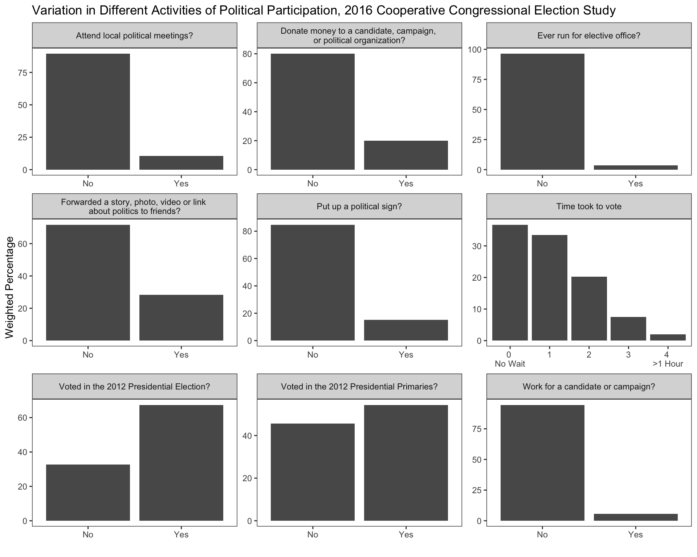
As the figure shows, there is clear variation in participation in various political activities. Indeed, it appears that the most costly form of political participation is running for elected office given that very few people undertake such an activity despite the plethora of local officials one could theoretically run for. Moreover, there is variation in the cost of voting. Some voters spend a substantial amount of time (i.e. greater than 10 minutes) exercising their right to vote.
3. Role of Resources in Citizen Voting & Participation
########## Figure 3 & 4: Low political sophistication ##########
# Correct Recall of Offices: Biden (V162072), Ryan (V162073a), John Roberts (V162076b), House Majority (V161515), Senate Majority (V161516)
recall <- subset(nes,select=c(V160102,V162072,V162073a,V162076b,V161515,V161516,V162074a,V162075a,V161270,V161361x))
colnames(recall) <- c("weight","biden","ryan","roberts","housemaj","senmaj","merkel","putin","educ","income")
recall$housemaj[recall$housemaj %in% 1] <- 0
recall$housemaj[recall$housemaj %in% 2] <- 1
recall$senmaj[recall$senmaj %in% 1] <- 0
recall$senmaj[recall$senmaj %in% 2] <- 1
x <- c(-7,-6,-5,-9)
recall[recall == -9] <- NA
recall[recall == -5] <- NA
recall[recall == -6] <- NA
recall[recall == -7] <- NA
recall2 <- recall[,1:8]
frequencies <- list()
for(i in 2:ncol(recall2)){
x <- data.frame(freq(recall2[,i],w=recall2$weight,plot=F))
x$category <- rownames(x)
x <- x[,3:4]
x <- subset(x,x$category != "Total")
x <- subset(x,x$category != "NA's")
x$activity <- colnames(recall2)[[i]]
frequencies[[i]] <- x
}
frequencies <- ldply(frequencies, data.frame)
frequencies$category <- ifelse(frequencies$category == 1, "Correct Answer", ifelse(frequencies$category == 0, "Incorrect Answer", NA))
frequencies$activity <- ifelse(frequencies$activity == "biden", "Vice President Joe Biden", ifelse(frequencies$activity == "housemaj", "House Republican Majority", ifelse(frequencies$activity == "merkel", "German Chancellor Angela Merkel", ifelse(frequencies$activity == "putin", "Russian President Vladimir Putin", ifelse(frequencies$activity == "roberts", "SCOTUS Chief Justice John Roberts", ifelse(frequencies$activity == "senmaj", "Senate Republican Majority", ifelse(frequencies$activity == "ryan", "Speaker Paul Ryan", NA)))))))
frequencies$Valid.Percent <- round(frequencies$Valid.Percent,1)
ggplot(frequencies, aes(x=category,y=Valid.Percent)) + theme_bw() + geom_bar(stat="identity") + theme_bw() + facet_wrap(~activity, ncol = 4) + theme(panel.grid.major = element_blank(), panel.grid.minor = element_blank()) + ggtitle("Variation in Citizen Response to Office Recall Battery, 2016 American National Election Study") + scale_y_continuous("Weighted Percentage") + scale_x_discrete("") + geom_text(aes(y = Valid.Percent + 5, label = paste0(Valid.Percent, '%')), position = position_dodge(width = .9),size = 3.5)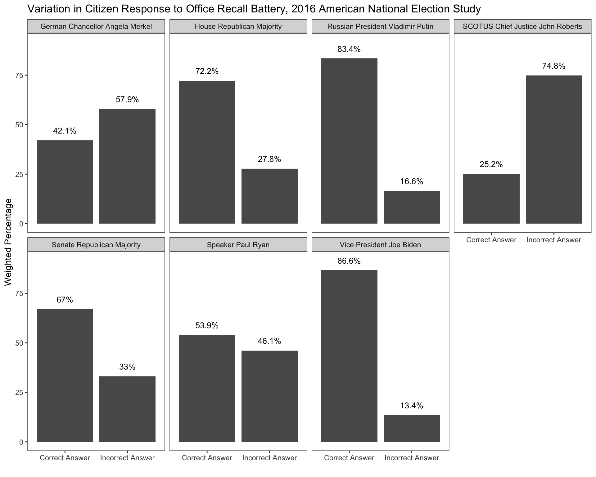
recall2$total_scale <- rowSums(recall2[,2:8],na.rm=T)
x <- data.frame(freq(recall2$total_scale,w=recall2$weight,plot=F))
x$category <- rownames(x)
x <- x[,2:3]
x <- subset(x,x$category != "Total")
x <- subset(x,x$category != "NA's")
x$activity <- "Number of Correct Reponses"
x$Percent <- round(x$Percent,1)
ggplot(x, aes(x=category,y=Percent)) + theme_bw() + geom_bar(stat="identity") + theme_bw() + theme(panel.grid.major = element_blank(), panel.grid.minor = element_blank()) + ggtitle("Total Number of Correct Responses to Office Recall Battery, 2016 American National Election Study") + scale_y_continuous("Weighted Percentage") + geom_text(aes(y = Percent + 0.50, label = paste0(Percent, '%')), position = position_dodge(width = .9),size = 3.5) + scale_x_discrete("Total Number of Correct Responses to Political Knowledge Questions")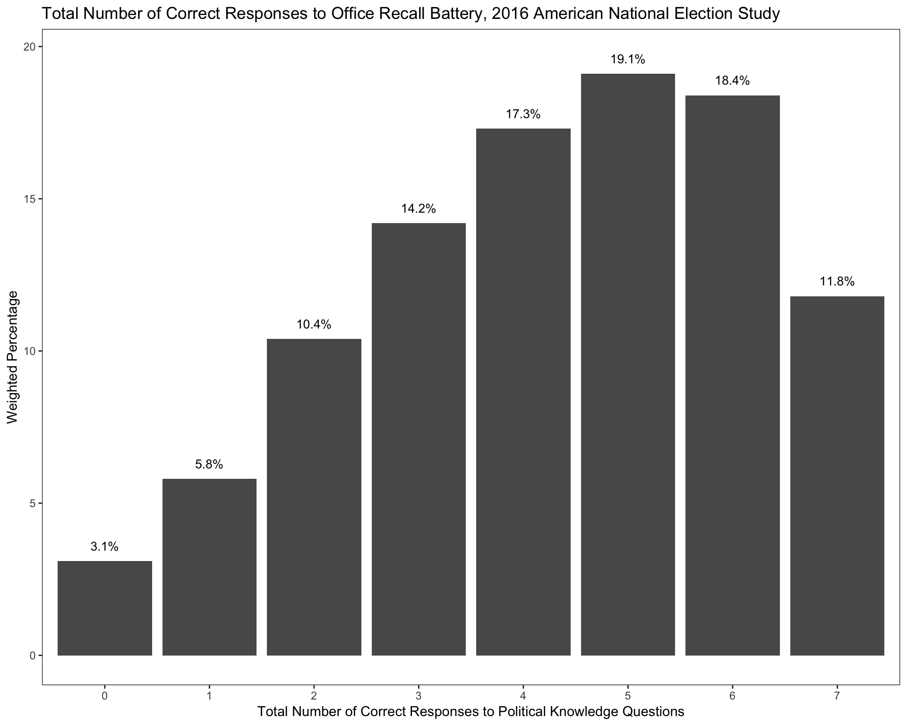
As the figure shows, there is clear evidence of variation in political knowledge among the mass public. As one can see from the visualization of American National Election Study, most Americans cannot recall salient political figures in society. For example, about 33% of Americans did not know that the Republicans controlled a majority of U.S. Senate seats but about 83% of Americans could tell you who Russian President Vladimir Putin was! This trend continues in the forthcoming visualization articulating to what extent are Americans knowledgable about the institutional role of Congress in American political life. This data is taken from Mondak, Carmines, Huckfeldt, Mitchell & Schraufnagel 2007 American Journal of Political Science article titled `` Does Familiarity Breed Contempt? The Impact of Information on Mass Attitudes Toward Congress’’. Note that these data come from the 2002 American Democracy Survey sponsored by by the Center on Congress at Indiana University.
###### Figure 5: Mondak Data Visizualtion (manual imputation given data in tabular form in AJPS article) ##########
mondak <- data.frame(Valid.Percent=c(69.9,61.5,68.6,67.8,45.4,43.6,77.1,76.4,43.6),activity=c("Who decides if a law is constitutional? \nCongress or SCOTUS?","Who nominates federal judges? \nPOTUS, SCOTUS, or Congress?","How much of a majority to override veto in \nthe House/Senate? 1/2,2/3, or 3/4?","What is the main duty of Congress? Write legislation, \nadminister POTUS policies, monitor states?","How long is a U.S. Senator term? 2,4,or 6 years?","How long is a U.S. Rep term? 2, 4, or 6 years?","If both chambers pass different bills, what happens? \nPOTUS chooses, SCOTUS reviews, \nor compromise?","Where does most work in Congress take place? \nFloor, Committee, or Filibuster?","Who breaks a tie in the Senate? \nPOTUS, VP, or House Speaker?"))
mondak2 <- mondak
mondak$category <- "Yes"
mondak2$category <- "No"
mondak2$Valid.Percent <- 100- mondak2$Valid.Percent
mondak <- rbind(mondak,mondak2)
ggplot(mondak, aes(x=category,y=Valid.Percent)) + theme_bw() + geom_bar(stat="identity") + theme_bw() + facet_wrap(~activity, ncol = 3) + theme(panel.grid.major = element_blank(), panel.grid.minor = element_blank()) + ggtitle("Variation in Knowledge about Congress, 2002 ADS Survey") + scale_y_continuous("Weighted Percentage",limits=c(0,90)) + scale_x_discrete("") + geom_text(aes(y = Valid.Percent + 5, label = paste0(Valid.Percent, '%')))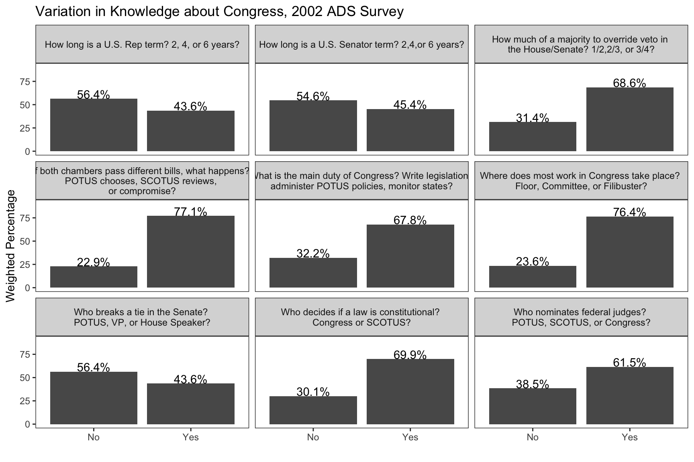
As the Figure shows, rather stunningly, Americans are stunningly ignorant as to the constitutional prerogatives held by the United States Congress. For example, only about a half of Americans can tell you the correct length of their member of Congress or United States Senator. This trend continues below in the visualization of CCES data, as Americans cannot even recall who their incumbent member of Congress is or their U.S. Senators.
###### Figure 6: Correct Office Recall as Political Sophistication ##########
# Correct Office Recalls
x <- subset(cces,select=c(year,weight,correct_senator1_recall,correct_senator2_recall,correct_mc_recall_knowledge))
x <- na.omit(x)
x <- ddply(x, .(year), summarize, correct_senator1_recall=weighted.mean(correct_senator1_recall,w=weight),correct_senator2_recall=weighted.mean(correct_senator2_recall,w=weight),correct_mc_recall_knowledge=weighted.mean(correct_mc_recall_knowledge,w=weight))
x <- melt(x,id="year")
x$variable <- ifelse(x$variable == "correct_senator1_recall","Sr. Senator",ifelse(x$variable == "correct_senator2_recall","Jr. Senator",ifelse(x$variable == "correct_mc_recall_knowledge","U.S. Rep.",NA)))
x$value <- x$value * 100
x$year <- as.numeric(x$year)
ggplot(x,aes(x=year,y=value,group=variable,color=variable,label=paste(round(x$value,0),"%",sep=""))) + geom_line() + theme_bw() + geom_label() + theme(legend.position="none") + annotate("text", x = 2008, y = 60.5, label = "U.S. \nRep",color="dodgerblue2") + annotate("text", x = 2008, y = 67, label = "Sr. U.S. \nSenator",color="red") + scale_color_manual("",values=c("grey47","red","dodgerblue2")) + annotate("text", x = 2008, y = 64, label = "Jr. U.S. \nSenator",color="grey47") + scale_x_continuous("Data: Cooperative Congressional Election Study, 2008-2016",breaks=seq(2008,2016,1)) + scale_y_continuous("Percentage of Constituents Correctly Identifying") + ggtitle("Variation in the Ability of Citizens to Recall Congressional Delegation, 2008-2016 CCES")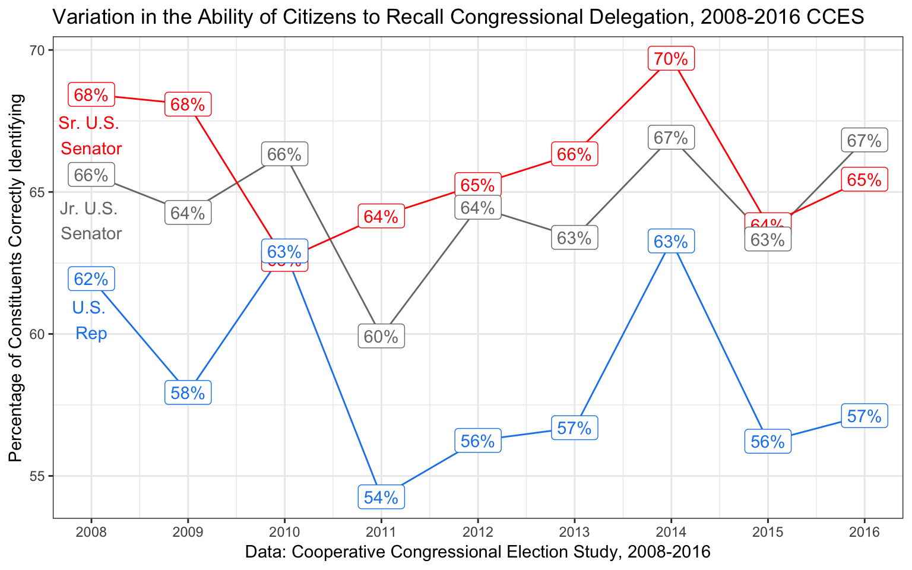
Taken together, there is reason to suspect that political knowledge varies across citizens. What could potentially be the source of this variation? As we discussed, Madison does not posit the dynamic of participation costs in his theory or to what extent do these costs vary by citizens. We could suspect that the capacity to pay participation costs, particularly with respect to the instrict cost of political knowledge, can be influenced by the degree of education held by a citizen. To empirically test this hypothesis, we specify a simple regression model predicting the extent of political knowledge as a function of a citizen’s formal education. The dependent variable used to test this simple bivariate model is the knowledge scale found in Figure 4 & 5 taken from our previous analysis of the American National Election Study. Results of this analysis can be found below.
###### Figure 7: Effect of Education on Political Knowledge ##########
recall$knowledge_scale <- rowSums(recall[,c(2:8)])
recall$educ[recall$educ %in% seq(1,8,1)] <- 1 # > HS
recall$educ[recall$educ %in% 9] <- 2 # HS
recall$educ[recall$educ %in% 10] <- 3 # Some college
recall$educ[recall$educ %in% seq(11,12,1)] <- 4 # 2-yr college
recall$educ[recall$educ %in% 13] <- 5 # BA
recall$educ[recall$educ %in% seq(14,16,1)] <- 6 #Post-BA
recall$educ[recall$educ %in% 90] <- 2
recall$educ[recall$educ %in% 95] <- 2
recall$educ <- factor(recall$educ)
model <- lm(knowledge_scale~educ,data=recall,weights = weight)
coeftest(model, vcov = vcovHC(model, "HC0"))##
## t test of coefficients:
##
## Estimate Std. Error t value Pr(>|t|)
## (Intercept) 2.96968 0.14762 20.1173 < 2.2e-16 ***
## educ2 0.90039 0.17017 5.2911 1.290e-07 ***
## educ3 1.28572 0.16631 7.7309 1.385e-14 ***
## educ4 1.41716 0.17155 8.2609 < 2.2e-16 ***
## educ5 1.93789 0.16057 12.0688 < 2.2e-16 ***
## educ6 2.48847 0.15990 15.5622 < 2.2e-16 ***
## ---
## Signif. codes: 0 '***' 0.001 '**' 0.01 '*' 0.05 '.' 0.1 ' ' 1predict <- data.frame(effect("educ", se=TRUE, mod = model, confidence.level = 0.95, xlevels=list(educ=seq(1,6,1),vcov. = vcovHC(model, "HC0"))))
ggplot(data= predict, mapping=aes(x=educ, y=fit,ymin=lower,ymax=upper,label=round(predict$fit,1))) + geom_errorbar(width=0.2,size=1) + geom_point(size=4, shape=21, fill="white") + theme_bw() + theme(panel.grid.major = element_blank(), panel.grid.minor = element_blank()) + scale_x_discrete("Voter Education Level",labels=c("> HS", "HS","Some \nCollege","2-Yr \nCollege","BA","Post-Grad")) + scale_y_continuous("Estimated Political Knowledge",breaks=seq(0,6,0.5)) + ggtitle("Effect of Education on Citizen Political Knowledge, \n2016 American National Election Study") + geom_text(size=3.5,hjust =0,nudge_x = 0.175)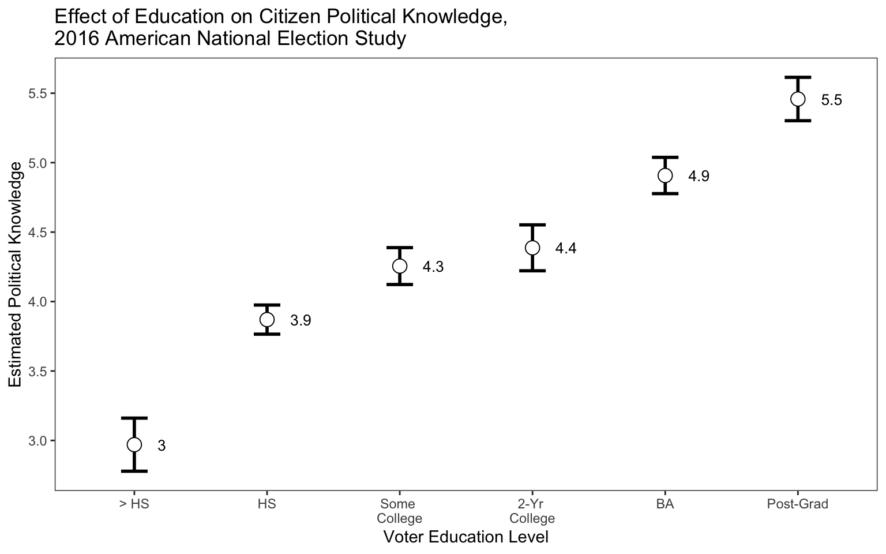
As one can see, there is a strong non-linear relationship between education and predicted political knowledge. The higher the education a given person posesses, the significantly more likely they are to hold more information about salient political facts in society. For example, the predicted level of political knowledge is approximately 5.5 out of 7 (79%) for those holding a post-graduate degree. By contrast, the predicted level of political knowledge is only 3.9 out of 7 (56%) for those holding a high school diploma. These differences in predicted political knowledge are statistically distinct from one another at \(\rho < 0.001\).
###### Figure 8: Effect of Income on Political Knowledge ##########
model <- lm(knowledge_scale~income,data=recall,weights = weight)
coeftest(model, vcov = vcovHC(model, "HC0"))##
## t test of coefficients:
##
## Estimate Std. Error t value Pr(>|t|)
## (Intercept) 3.0547601 0.0896833 34.062 < 2.2e-16 ***
## income 0.0800842 0.0047179 16.975 < 2.2e-16 ***
## ---
## Signif. codes: 0 '***' 0.001 '**' 0.01 '*' 0.05 '.' 0.1 ' ' 1predict <- data.frame(effect("income", se=TRUE, mod = model, confidence.level = 0.95, xlevels=list(income=seq(1,28,1),vcov. = vcovHC(model, "HC0"))))
ggplot(data= predict, mapping=aes(x=income, y=fit)) + geom_line(aes(x = income, y = fit), size = 0.50) + geom_ribbon(aes(ymin=lower, ymax=upper), alpha = .2) + theme_bw() + theme(panel.grid.major = element_blank(), panel.grid.minor = element_blank()) + scale_x_continuous("Voter Income Level",limits=c(1,28),breaks=c(1,28),labels=c("< $5,000","> $250,000")) + scale_y_continuous("Estimaed Political Knowledge") + ggtitle("Effect of Income on Citizen Political Knowledge, \n2016 American National Election Study")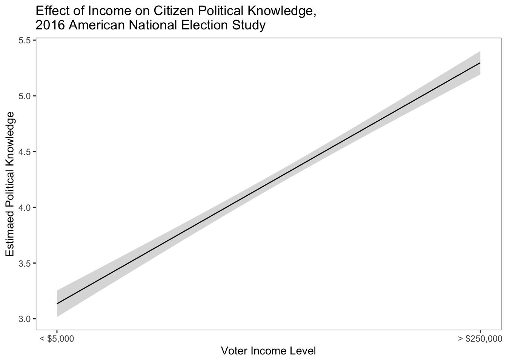
We find the same relationship with respect the bivariate test of voter income and estimated political knowledge. As the Figure shows, higher income citizens are far more likely to be knowledgable about political stimuli than those with lower income. Taken together, it is clear that income and education are significant predictors of the level of political knowledge and the ability to think about salient political topics of the day.
###### Figure 9: Effect of Education on Political Participation (Turnout) ##########
# Role of resources in predicting campaign contributions & voting. This section articulates the resource bias in participation & voting
resources <- subset(cces_2014,select=c(weight,cdid,e2014gvm,CC417a_4,faminc,educ))
resources[] <- lapply(resources, as.character)
colnames(resources) <- c("weight","cdid","turnout","contribute","income","education")
resources$turnout[resources$turnout == "unknown"] <- 1
resources$turnout[resources$turnout == "polling"] <- 1
resources$turnout[resources$turnout == "mail"] <- 1
resources$turnout[resources$turnout == "earlyVote"] <- 1
resources$turnout[resources$turnout == "absentee"] <- 1
resources$turnout <- as.numeric(resources$turnout)
resources$turnout[is.na(resources$turnout)] <- 0
resources$contribute[resources$contribute == "No"] <- 0
resources$contribute[resources$contribute == "Yes"] <- 1
na <- data.frame(freq(resources$income,plot=F))
na$category <- rownames(na)
rownames(na) <- NULL
resources$income[resources$income %in% as.character(na[18,4])] <- 0
resources$income[resources$income %in% as.character(na[1,4])] <- 1
resources$income[resources$income %in% as.character(na[6,4])] <- 2
resources$income[resources$income %in% as.character(na[10,4])] <- 3
resources$income[resources$income %in% as.character(na[12,4])] <- 4
resources$income[resources$income %in% as.character(na[13,4])] <- 5
resources$income[resources$income %in% as.character(na[15,4])] <- 6
resources$income[resources$income %in% as.character(na[16,4])] <- 7
resources$income[resources$income %in% as.character(na[17,4])] <- 8
resources$income[resources$income %in% as.character(na[2,4])] <- 9
resources$income[resources$income %in% as.character(na[3,4])] <- 10
resources$income[resources$income %in% as.character(na[4,4])] <- 11
resources$income[resources$income %in% as.character(na[7,4])] <- 12
resources$income[resources$income %in% as.character(na[8,4])] <- 13
resources$income[resources$income %in% as.character(na[11,4])] <- 14
resources$income[resources$income %in% as.character(na[14,4])] <- 15
resources$income[resources$income %in% as.character(na[9,4])] <- 13
resources$income[resources$income %in% as.character(na[5,4])] <- 11
resources$income[resources$income %in% as.character(na[c(19,20),4])] <- NA
resources$education <- factor(resources$education,levels=c("No HS","High school graduate","Some college","2-year","4-year","Post-grad"))
resources$income <- as.numeric(resources$income)
resources$weight <- as.numeric(resources$weight)
resources$contribute <- as.numeric(resources$contribute)
# Turnout ~ Education
model <- glm(turnout ~ education, data=resources, weights=weight, family = binomial(link = "logit"))
coeftest(model, vcov = cluster.vcov(model, cluster=resources$cdid))##
## z test of coefficients:
##
## Estimate Std. Error z value Pr(>|z|)
## (Intercept) -0.686547 0.081210 -8.4539 < 2.2e-16 ***
## educationHigh school graduate 0.408585 0.080498 5.0757 3.861e-07 ***
## educationSome college 0.734862 0.078976 9.3049 < 2.2e-16 ***
## education2-year 0.753613 0.100010 7.5354 4.869e-14 ***
## education4-year 1.064174 0.083232 12.7857 < 2.2e-16 ***
## educationPost-grad 1.558774 0.078398 19.8828 < 2.2e-16 ***
## ---
## Signif. codes: 0 '***' 0.001 '**' 0.01 '*' 0.05 '.' 0.1 ' ' 1predict <- data.frame(effect("education", se=TRUE, mod = model, confidence.level = 0.95, xlevels=list(vcov. = cluster.vcov(model, cluster=resources$cdid))))
predict$education <- factor(predict$education,levels=c("No HS","High school graduate","Some college","2-year","4-year","Post-grad"))
ggplot(data= predict, mapping=aes(x=education, y=fit, ymin=lower, ymax=upper, fill=education,label=paste((round(predict$fit,2) * 100),"%",sep=""))) + geom_bar(stat="identity") + geom_errorbar(width=.25) + theme_bw() + theme(panel.grid.major = element_blank(), panel.grid.minor = element_blank()) + scale_x_discrete("Voter Education Level") + scale_y_continuous(limits=c(0,1.0), breaks=seq(0,1.0,0.05), "Probability of Turning Out to Vote") + ggtitle("Probability of Voter Turnout by Education Level in the 2014 Midterm Elections") + coord_cartesian(ylim=c(0.05,0.75)) + scale_fill_discrete(guide=FALSE) + geom_label(size=3.5,nudge_y = 0.05)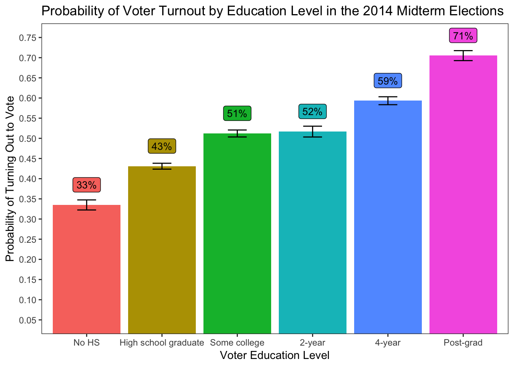
Of course, political knowledge is not the only salient dependent variable of interest. Another dimension of transaction costs of political participation can be the ability to pay the cost to vote or even engage in the relatively high cost political activity of contributing to a political campaign. We should expect that education and income should increase the probability of a given citizen to participate in voting or campaign finance activities. To test whether education is related to the likelihood of being a campaign donor, I specify a simple bivariate logistic regression model where the probability of being a campaign donor is a function of a citizen’s education level. Results of this model can be found above. As one can see the probability of turning out to vote is 71% for those that hold a post-graduate education while it is only 41% for those with a high school diploma.
###### Figure 10: Effect of Education on Political Participation (Campaign Donor) ##########
# Contribution ~ Education
model <- glm(contribute ~ education, data=resources, weights=weight, family = binomial(link = "logit"))
coeftest(model, vcov = cluster.vcov(model, cluster=resources$cdid))##
## z test of coefficients:
##
## Estimate Std. Error z value Pr(>|z|)
## (Intercept) -2.273247 0.095873 -23.7111 < 2.2e-16 ***
## educationHigh school graduate 0.054721 0.113105 0.4838 0.6285
## educationSome college 0.732486 0.094246 7.7721 7.721e-15 ***
## education2-year 0.663881 0.100823 6.5846 4.560e-11 ***
## education4-year 1.154378 0.100112 11.5308 < 2.2e-16 ***
## educationPost-grad 1.620535 0.103399 15.6727 < 2.2e-16 ***
## ---
## Signif. codes: 0 '***' 0.001 '**' 0.01 '*' 0.05 '.' 0.1 ' ' 1predict <- data.frame(effect("education", se=TRUE, mod = model, confidence.level = 0.95, xlevels=list(vcov. = cluster.vcov(model, cluster=resources$cdid))))
predict$education <- factor(predict$education,levels=c("No HS","High school graduate","Some college","2-year","4-year","Post-grad"))
ggplot(data= predict, mapping=aes(x=education, y=fit, ymin=lower, ymax=upper, fill=education,label=paste((round(predict$fit,2) * 100),"%",sep=""))) + geom_bar(stat="identity") + geom_errorbar(width=.25) + theme_bw() + theme(panel.grid.major = element_blank(), panel.grid.minor = element_blank()) + scale_x_discrete("Voter Education Level") + scale_y_continuous(limits=c(0,1.0), breaks=seq(0.05,0.40,0.05), expand=c(0,0), "Probability of Contributing to a Campaign") + ggtitle("Probability of Being a Campaign Donor by Education Level in the 2014 Midterm Elections") + coord_cartesian(ylim=c(0,0.45)) + scale_fill_discrete(guide=FALSE) + geom_label(size=3.5,nudge_y = 0.05)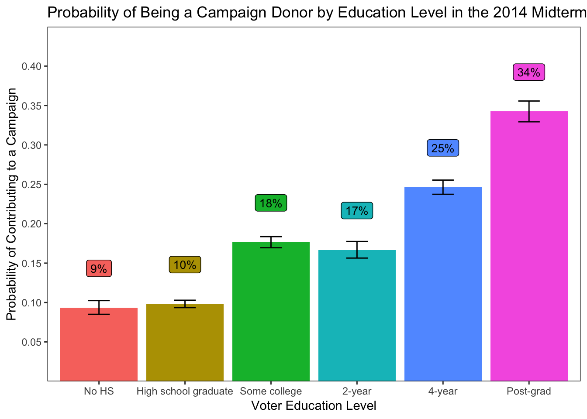
This relationship continues with respect to the probability of being a campaign donor. As one can see, there is a strong relationship between education and the probability of being a campaign donor. For example, you are 34% more likely to contribute to a campaign if you hold a post-graduate degree and only 10% if you hold just a high school diploma. Note that the probability of contributing to a campaign is far lower, across all discrete education groups, than it is for voting. This reflects variation in the cost of differing forms of political participation, with contributing to campaigns being a far more costly form of political expression. We see the same relationship below with respect to citizen income and the probability of turning out to vote.
###### Figure 11: Effect of Income on Political Participation (Voter Turnout) ##########
model <- glm(turnout ~ income, data=resources, weights=weight, family = binomial(link = "logit"))
coeftest(model, vcov = cluster.vcov(model, cluster=resources$cdid))##
## z test of coefficients:
##
## Estimate Std. Error z value Pr(>|z|)
## (Intercept) -0.4961371 0.0283396 -17.507 < 2.2e-16 ***
## income 0.0988996 0.0037892 26.100 < 2.2e-16 ***
## ---
## Signif. codes: 0 '***' 0.001 '**' 0.01 '*' 0.05 '.' 0.1 ' ' 1predict <- data.frame(effect("income", se=TRUE, mod = model, confidence.level = 0.95, xlevels=list(income = seq(0,15,1), (vcov. = cluster.vcov(model, cluster=resources$cdid)))))
ggplot(data= predict, mapping=aes(x=income, y=fit)) + geom_line(aes(x = income, y = fit), size = 0.50) + geom_ribbon(aes(ymin=lower, ymax=upper), alpha = .2) + scale_colour_manual("",values="black") + scale_fill_manual("",values="grey12") + theme_bw() + theme(panel.grid.major = element_blank(), panel.grid.minor = element_blank()) + scale_x_continuous(limits=c(0,15), breaks=c(0,15), labels=c("Less than \n$10,000", "Greater than \n$500,000"), "Voter Income") + scale_y_continuous(limits=c(0.3,0.75), breaks=seq(0.3,0.75,0.05), "Probability of Turning Out to Vote") + ggtitle("Probability of Voter Turnout by Income Level in the 2014 Midterm Elections")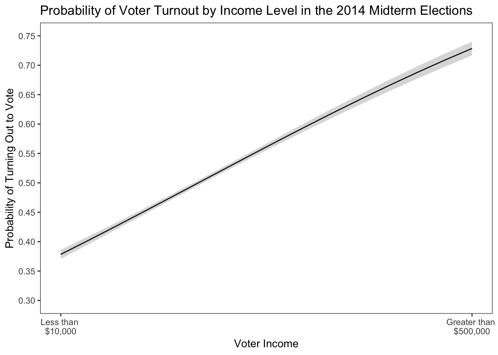
Again, the higher the political resource of income, the more likely a given voter is to turnout. We can extend this analysis to the different political variable of contributing to a campaign. This bivariate analysis can be found below.
###### Figure 12: Effect of Income on Political Participation (Campaign Contribution) ##########
# Contribution ~ Income
model <- glm(contribute ~ income, data=resources, weights=weight, family = binomial(link = "logit"))
coeftest(model, vcov = cluster.vcov(model, cluster=resources$cdid))##
## z test of coefficients:
##
## Estimate Std. Error z value Pr(>|z|)
## (Intercept) -2.5675588 0.0478389 -53.671 < 2.2e-16 ***
## income 0.1763513 0.0065338 26.991 < 2.2e-16 ***
## ---
## Signif. codes: 0 '***' 0.001 '**' 0.01 '*' 0.05 '.' 0.1 ' ' 1predict <- data.frame(effect("income", se=TRUE, mod = model, confidence.level = 0.95, xlevels=list(income = seq(0,15,1), (vcov. = cluster.vcov(model, cluster=resources$cdid)))))
ggplot(data= predict, mapping=aes(x=income, y=fit)) + geom_line(aes(x = income, y = fit), size = 0.50) + geom_ribbon(aes(ymin=lower, ymax=upper), alpha = .2) + scale_colour_manual("",values="black") + scale_fill_manual("",values="grey12") + theme_bw() + theme(panel.grid.major = element_blank(), panel.grid.minor = element_blank()) + scale_x_continuous(limits=c(0,15), breaks=c(0,15), labels=c("Less than \n$10,000", "Greater than \n$500,000"), "Voter Income") + scale_y_continuous(limits=c(0,0.55), breaks=seq(0,0.55,0.05), "Probability of Contributing to a Campaign") + ggtitle("Probability of Being a Campaign Donor by Income Level in the 2014 Midterm Elections")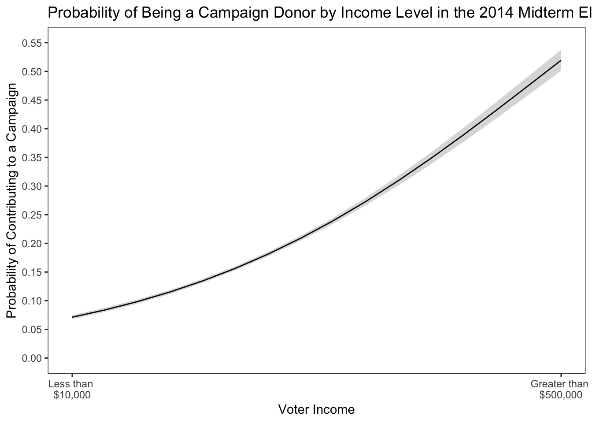
Again, the higher income the more likely a given citizen is to participate in the political activity of contributing to a political campaign. Yet, the probability of contributing to a campaign is only 50% for those making greater than $500,000 in annual income. By contrast, the probability of turning out to vote among these high-income citizens is approximately 72%, again reflecting the inherently more costly nature of contributing to campaigns relative to voting.
4. Implications for Legislative Representation: Is the Madisonian Model Flawed?
What does this analysis suggest for the nature of institutional legislative representation provided by the Madisonian model of democracy? To assess the implications of variation in the ability to pay participation costs among the American mass public, implications not accounted for by Madison in his ``Theory of the Republic,’’ I specify the following logical exercise. Consider a 900 person congressional district below, comprised of an equal number of citizens (450) being members of a Lutes faction and a Loggers faction. This hypothetical district is visualized below in the following waffle plot.
###### Figure 13: Waffle Chart of Fictional District ##########
# Waffle Chart of Fictional District
var <- c("PLU Lutes","UPS Loggers")
nrows <- 20
df <- expand.grid(y = 1:nrows, x = 1:nrows)
categ_table <- round(table(var) * ((nrows*nrows)/(length(var))))
categ_table## var
## PLU Lutes UPS Loggers
## 200 200df$category <- factor(rep(names(categ_table), categ_table))
ggplot(df, aes(x = x, y = y, fill = category)) + geom_tile(color = "black", size = 0.5) + scale_x_continuous(expand = c(0, 0)) + scale_y_continuous(expand = c(0, 0), trans = 'reverse') + scale_fill_manual("",values = c("yellow1","maroon")) + labs(title="Fictional Even District of Lutes & Loggers", caption="Each Square Represents a Single Voter \n(N = 200 PLU & 200 UPS voters)") + theme(plot.title = element_text(size = rel(1.2)),axis.text = element_blank(), axis.title = element_blank(), axis.ticks = element_blank(),legend.title = element_blank(), legend.position = "bottom",legend.box.just = "left", legend.key.size = unit(1,"line"), legend.key = element_rect(size = 0, color = 'white'), legend.text.align = 0, legend.box = "horizontal",legend.spacing.x = unit(0.25, 'cm'))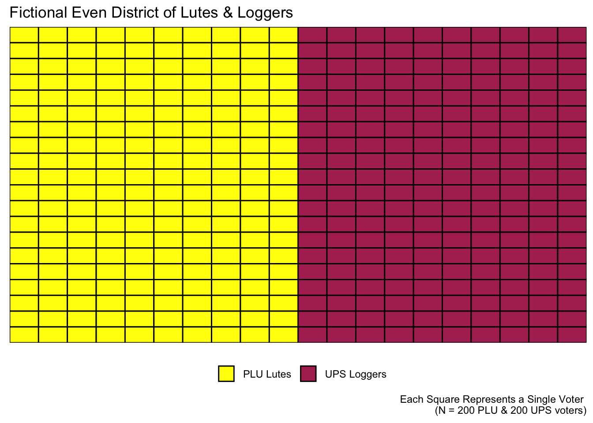
As one can see, each square represents a single citizen in this hypothetical district. You can consider this a visualization of the total population within the district and the entire universe of the potential voting pool within the district. Now consider that the pool of voters that decide to turnout on election day is simply a sample of the total population residing within a given district. Would non-universal turnout (i.e., a 100% turnout rate) be a theoritical problem with respect to secureing ``correct’’ and accurate representation where an elective representative represents the views of a majority of their citizens? The data visualization below helps shed some light on this important question.
###### Figure 14: Waffle Chart of Non-Bias Turnout ##########
# Even turnout
df$turnout <- sample(0:400, 400, replace=F)
df$turnout <- ifelse(df$turnout <= 200, 1,0)
df$turnout_factor <- factor(df$turnout,levels=c(1,0),labels=c("PLU Lutes","UPS Loggers"))
ggplot(df, aes(x = x, y = y, fill = turnout_factor)) + geom_tile(color = "black", size = 0.5) + scale_x_continuous(expand = c(0, 0)) + scale_y_continuous(expand = c(0, 0), trans = 'reverse') + scale_fill_manual("",values = c("yellow1","maroon")) + labs(title="Non-Bias Turnout in Fictional Even District of Lutes & Loggers", caption="Each Square Represents a Single Voter \n(N = 200 PLU & 200 UPS voters)") + theme(plot.title = element_text(size = rel(1.2)),axis.text = element_blank(), axis.title = element_blank(), axis.ticks = element_blank(),legend.title = element_blank(), legend.position = "bottom",legend.box.just = "left", legend.key.size = unit(1,"line"), legend.key = element_rect(size = 0, color = 'white'), legend.text.align = 0, legend.box = "horizontal",legend.spacing.x = unit(0.25, 'cm'))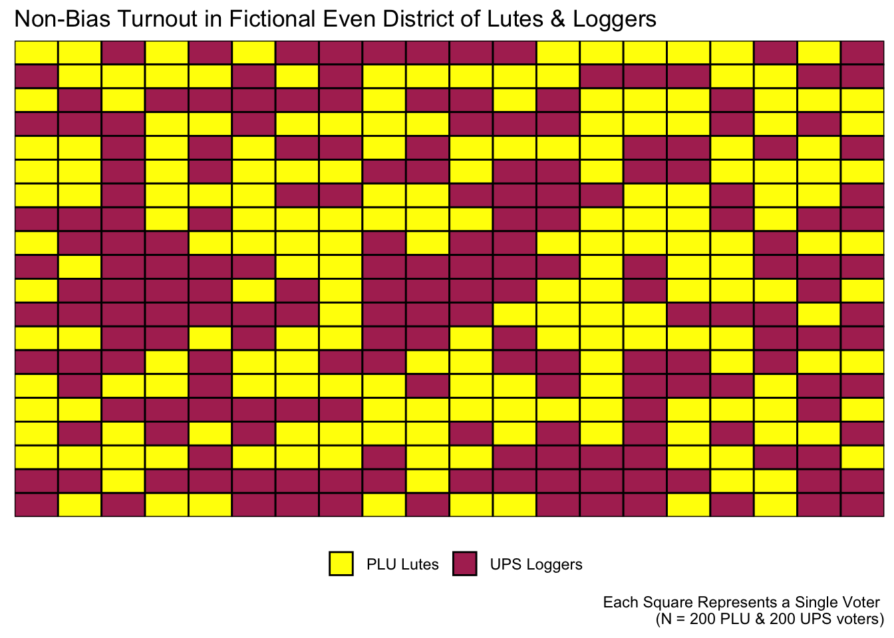
As one can see, non-universal turnout is not a significant problem with respect to potentially securing ``correct’’ representation. In this example, 400 citizens turned out to vote (a 44% turnout-rate, which is about on-par with your average off-year midterm election cycle). However, this is not a problem since this sample of voters is perfectly representative of the district population, with roughly 200 Lutes and 200 Loggers paying the cost to turn out to vote. Where could this be a problem? The visualization below can provide a clue.
###### Figure 15: Waffle Chart of Bias Turnout ##########
df$bias2 <- sample(0:400, 400, replace=F)
df$bias2 <- ifelse(df$bias2 <= 100,0,1)
df$bias2 <- factor(df$bias2,levels=c(1,0),labels=c("PLU Lutes","UPS Loggers"))
ggplot(df, aes(x = x, y = y, fill = bias2)) + geom_tile(color = "black", size = 0.5) + scale_x_continuous(expand = c(0, 0)) + scale_y_continuous(expand = c(0, 0), trans = 'reverse') + scale_fill_manual("",values = c("yellow1","maroon")) + labs(title="Bias Turnout in Fictional Even District of Lutes & Loggers", caption="Each Square Represents a Single Voter \n(N = 300 (75%) PLU & 100 (25%) UPS voters)") + theme(plot.title = element_text(size = rel(1.2)),axis.text = element_blank(), axis.title = element_blank(), axis.ticks = element_blank(),legend.title = element_blank(), legend.position = "bottom",legend.box.just = "left", legend.key.size = unit(1,"line"), legend.key = element_rect(size = 0, color = 'white'), legend.text.align = 0, legend.box = "horizontal",legend.spacing.x = unit(0.25, 'cm'))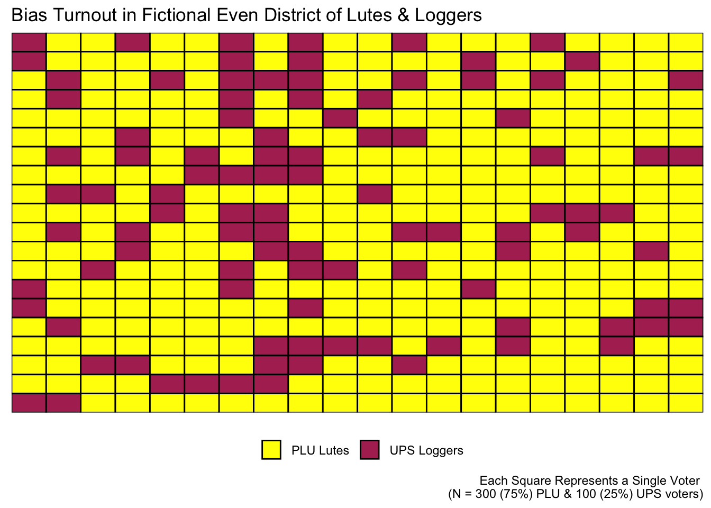
As the waffle plot above shows, we now have a bias sample of voter turnout with respect to the total population of voters. As one can see (and reflecting the inherently superior political resources garnered by those in the Lutes faction!) 300 of the voters (75%) that showed up are members of the Lutes faction while only 100 of the voters (25%) are members of the Loggers faction. Since there is something systematicly different in the probability of paying the cost to vote between Lutes and Loggers (with Lutes having higher resources to pay these costs!), Lutes are far more likely to vote (50%, to be precise) and will vote for a representative of their faction. Now, why might this be a problem? Let’s assume that Lutes follow the Michigan Model of electoral choice and vote in accordance to their partisan group identity. Naturally, they choose a fellow Lute to represent them and this Lute legislator, acting on the inherent incentives in the representative model of delegation (i.e., Madison’s Theory of the Republic), will vote consistently and 100% in accordance to their principal. In this case, the voters that sent him or her to Capitol Hill, and ultimately who’s vote will be critical for hopes of re-election, are the electoral principals. By contrast, how did Madison envision legislative representative outcomes to look like according to his Theory of the Republic? To shed light on this question, we turn to the specification of his theoritical model in graphical form below.
###### Figure 15: Model of Madisonian Turnout ##########
madison <- data.frame(district=seq(-1,1,0.01),member=seq(-1,1,0.01))
ggplot(madison,aes(x=district,y=member)) + geom_line(size=2) + scale_x_continuous("District Ideology",limits=c(-1,1),breaks=c(-1,0,1),labels=c("-1 \nConservative","0","1 \nLiberal")) + scale_y_continuous("Representative Ideology",limits=c(-1,1),breaks=c(-1,0,1),labels=c("-1 \nConservative","0","1 \nLiberal")) + ggtitle("Madisonian Model of Congressional Representation")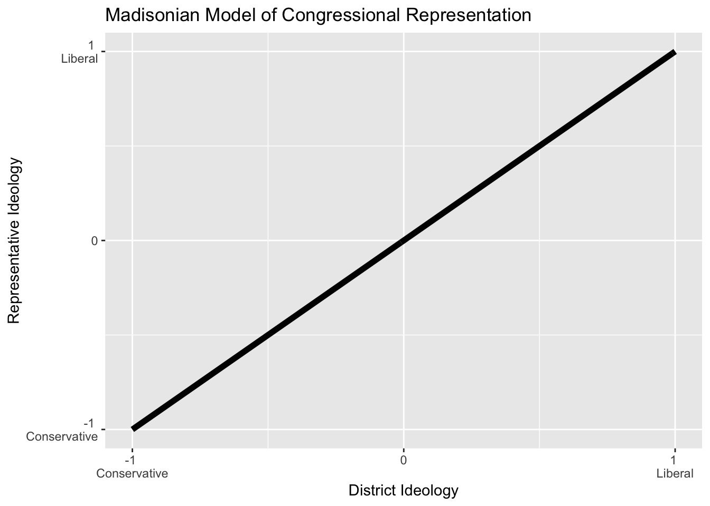
Madison would envision electoral outcomes to follow a perfect one to one relationship between district ideological policy preferences and that of their legislator. Given that voters are tasked with the paramount duty to screen and hold their incumbent legislators accountable, voters will simply toss incumbents out of office that do not reflect aggregate district opinion of the majority of the population/voters. Compounding this dynamic of electoral accountability is the fact that non-incumbent challenger candidates have a strong incentive to be responsive to the concerns of the majority of citizens on the campaign trail and to pick apart an incumbent’s voting record on Capitol Hill. After all, being a member of Congress or a United States Senator is a phenomenal job with incredible related perks! Now, is Madison’s model relaized in electoral outcomes for the U.S. House or U.S. Senate? To do this, I turn to the last set of figures below showing the relationship between district ideological preferences and legislator ideological preferences by political party and legislative chamber. Please note that I use a fancy Aldrich-McKelvey latent variable scaling model to estimate citizen and elite (legislator) preferences on the same scale. For more information on this methodology and its application to assessing critical questions regarding the institutional representation provided to the American mass public by legislative elites, please see Ramey 2015 and Hare et al. 2014.
###### Figure 15 & 16: Congruence Between District & Legislator Ideology ##########
# Legislative Representation
ggplot(senate_spatial_errors_dataset,aes(x=linmap_idealpts_median_voter,y=senator_idealpt_linmap,label=party_code_string,colour=party_code_string)) + geom_text(aes(label=party_code_string),size = 3, alpha = 1, hjust=-0.2, vjust=0) + scale_color_manual("",values=c("blue","red")) + scale_y_continuous("Legislator Ideal Point (Liberal-Conservative)",limits=c(-1,1)) + facet_wrap(~congress) + geom_smooth(method = "loess", se = T, color="black",aes(x=linmap_idealpts_median_voter,y=senator_idealpt_linmap),inherit.aes = F) + theme_bw() + theme(legend.position="none") + scale_x_continuous("State Median Voter Ideal Point (Liberal-Conservative)") + ggtitle("Legislative Representation in the U.S. Senate, 2008-2014")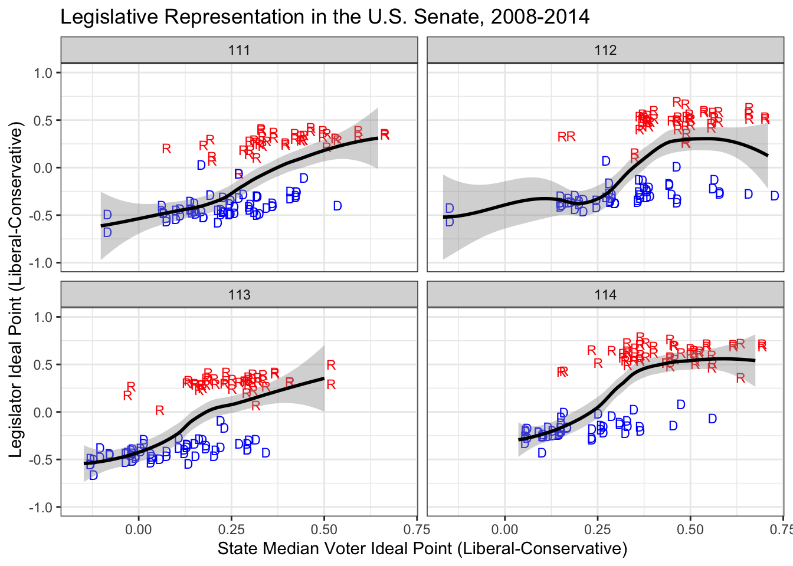
ggplot(house_spatial_errors_dataset,aes(x=linmap_idealpts_median_voter,y=mc_idealpt_linmap,label=party_code_string,colour=party_code_string)) + geom_text(aes(label=party_code_string),size = 3, alpha = 1, hjust=-0.2, vjust=0) + scale_color_manual("",values=c("blue","red")) + scale_y_continuous("Legislator Ideal Point (Liberal-Conservative)",limits=c(-1,1)) + facet_wrap(~congress) + geom_smooth(method = "loess", se = T, color="black",aes(x=linmap_idealpts_median_voter,y=mc_idealpt_linmap),inherit.aes = F) + theme_bw() + theme(legend.position="none") + scale_x_continuous("District Median Voter Ideal Point (Liberal-Conservative)") + ggtitle("Legislative Representation in the U.S. House, 2008-2014")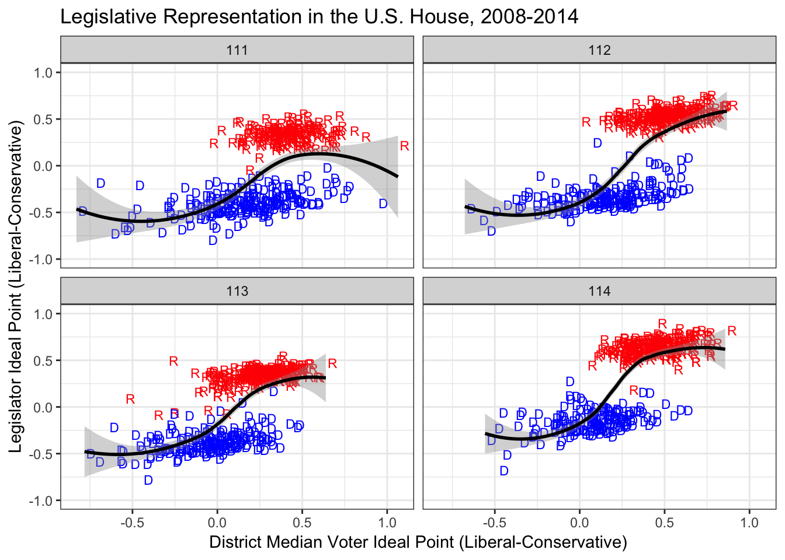
As one can clearly see, there is strong evidence of a lack of congruence between constituent ideological preferences and those of their elected legislators in the U.S. House and U.S. Senate. There is also clear evidence of leap-frog representation found by Bafumi & Herron 2010. Given the little within-party variation of ideological positions within the Democratic and Republican parties in Congress, the ideological flavor of your elected Democrat or Republican in Congress will be very similar independent of the type of district they represent. For example, the ideological representation provided by a Democratic (Republican) Senator or member of Congress will be essentially the same degree of policy liberal (conservative) if they represent the liberal state of California or the conservative state of Arkansas. Moreover, in the event of a seat turnover in Congress, a relatively conservative Republican will be replaced by a relatively liberal Democrat, providing for ``leap-frog’’ representation and a lack of a significant moderate contingent of legislators. In sum, Madison’s model is not realized in contemporary Congressional election outcomes. If I had the opportunity to teach an entire course of legislative representation, the U.S. Congress, or American political behavior; we would spend much of our time assessing the factors of influencing change in Congressional representation over time and the factors motivating how citizens think of institutional representation and how this influences, ultimately, their electoral behavior in holding elites accountable for what they do in office!